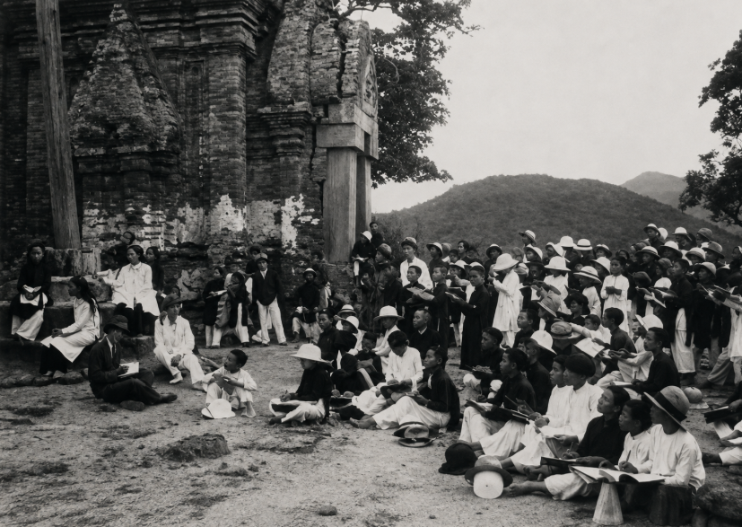
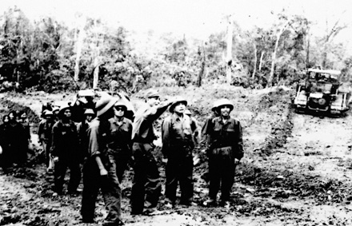
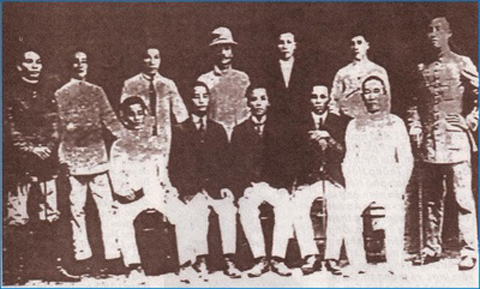
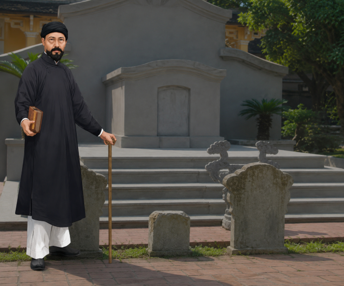
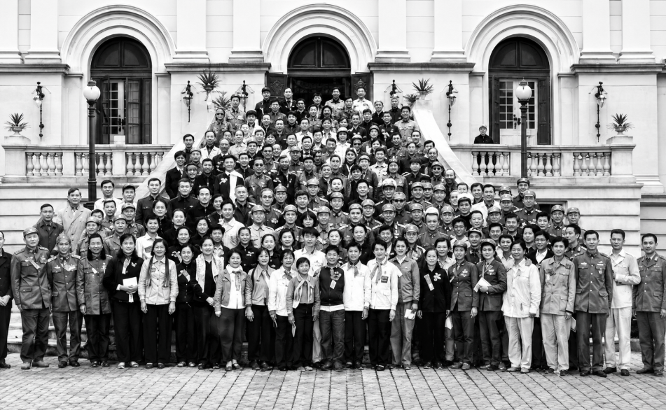
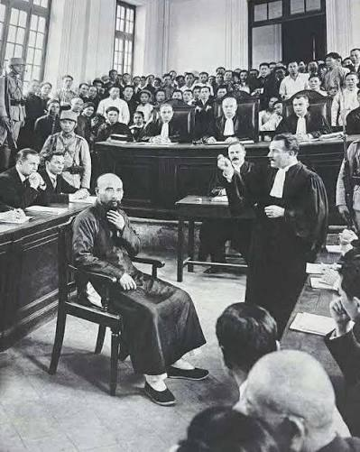
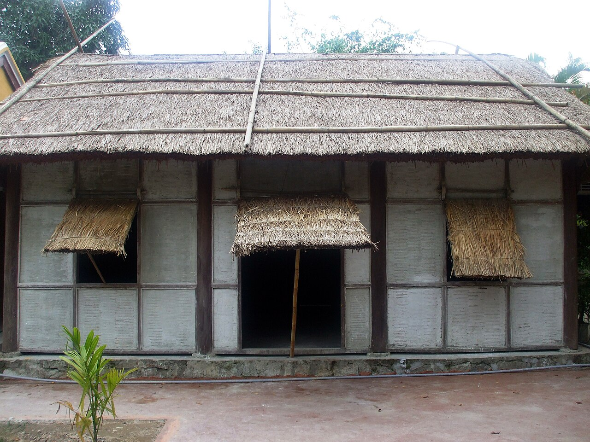

Hành trình vượt biên giới ba nước. Các điểm mở khóa dần theo từng chương.
ĐÃ KIỂM CHỨNG
Tiêu đề
Nội dung...
Trích nguồn
⚡
Phan Bội Châu — Hiệu Sào Nam
Dân ta phải tự cứu lấy dân ta trước khi mong ai cứu giúp.
Chí Sĩ Không Lùi Bước!
⚡ COMBO x3
+điểm thưởng!
⚡
Streak
0
Điểm
0
Danh hiệu
—
⚡
Sử Việt Tương Tác
PHAN BỘI CHÂU Ngọn Lửa Duy Tân Xứ Người
Năm 1867 — 1940 · Chí Sĩ Sào Nam
Ngươi là Phan Bội Châu — nhà nho nghèo xứ Nghệ nhận ra con đường khoa cử cũ không còn cứu được nước. Từ việc thành lập Duy Tân Hội bí mật, phát động phong trào Đông Du đưa hàng trăm thanh niên sang Nhật học tập, đến cú sốc bị đồng minh quay lưng, sa lưới tại Thượng Hải, và mười lăm năm cuối đời làm "Ông già Bến Ngự" — một hành trình 7 chương bôn ba khắp ba nước để tìm đường cứu nước.
⚡ 7 chương🎓 Kiến thức + Cửa ải🗺️ Bản đồ hành trình📖 Có nguồn tham khảo
▾ hoặc cuộn xuống
📖 Chương 1 · ~1867–1900 — Nghệ An, Giữa Cựu Học Và Tân Thời 📖 nguồn

📖 NAM ĐÀN, NGHỆ AN — CUỐI THẾ KỶ 19
1
~1867
Nghệ An
2
1904
Duy Tân Hội
3
1905
Đông Du
4
1908
Trục Xuất
5
1912
Quang Phục Hội
6
1925
Bị Bắt
7
1925–40
Bến Ngự
⚡Chí Khí Duy Tân
0%
📚 Con nhà nho nghèo
Phan Bội Châu (hiệu Sào Nam) sinh ra tại Nam Đàn, Nghệ An, trong một gia đình nhà nho nghèo. Từ nhỏ ông đã nổi tiếng thông minh, học chữ Hán từ cha, chuẩn bị cho con đường khoa cử truyền thống.
Nhưng con đường ấy không suôn sẻ. Nhiều lần lều chõng đi thi, ông trải qua cả thất bại lẫn thành công, trong khi đất nước xung quanh đang đổi thay chóng mặt: Pháp đã đặt xong ách đô hộ, triều đình Huế chỉ còn là cái bóng, và cả một hệ thống khoa cử nghìn năm đang dần trở nên vô nghĩa trước súng ống phương Tây.
Một người bạn đồng môn, sau kỳ thi
"Anh đỗ đạt để làm gì, khi cả triều đình đã không còn thực quyền? Sách thánh hiền có dạy ta cách đánh đuổi súng thần công của người Pháp không?"
Câu hỏi ấy ám ảnh Phan Bội Châu suốt nhiều năm. Ông nhận ra: con đường khoa cử — con đường duy nhất một nho sinh được dạy để "giúp đời" — đã không còn đủ sức giải quyết vấn đề lớn nhất của thời đại: làm sao giành lại độc lập cho một dân tộc đã mất nước.
📖 Bước ngoặt tư tưởng
Đầu thế kỷ 20, Phan Bội Châu bắt đầu tiếp xúc với "tân thư" — sách báo cải cách từ Trung Quốc, Nhật Bản, giới thiệu tư tưởng duy tân, dân chủ, và các cuộc cách mạng đang làm rung chuyển châu Á. Ông nhận ra: muốn cứu nước, phải học cách các dân tộc khác đã tự cường thế nào.
🎓 Câu hỏi khởi đầu
Phan Bội Châu xuất thân từ tầng lớp nào trong xã hội Việt Nam cuối thế kỷ 19?
💭 Suy ngẫm (không chấm điểm)
Khi cả một hệ thống tri thức mà bạn được dạy từ nhỏ (khoa cử Nho học) không còn đủ sức giải quyết vấn đề lớn nhất của thời đại, bạn nghĩ điều gì khó khăn nhất trong việc "học lại từ đầu"?
Không có đáp án đúng/sai — đây là câu hỏi để bạn tự suy ngẫm trước khi bước vào hành trình.
⚡ Trước sự bế tắc của con đường khoa cử cũ, Phan Bội Châu quyết định...
📍 Lựa chọn B
⚠️Triều đình Huế lúc này chỉ còn danh nghĩa — mọi quyền lực thực sự nằm trong tay chính quyền bảo hộ Pháp. Một vị quan trung thực nhất cũng không thể thay đổi được cấu trúc quyền lực từ bên trong.
⚡ Nhận ra cần một con đường khác...
🗝️ Chương 2 · Năm 1904 — Duy Tân Hội, Liên Minh Bí Mật 📖 nguồn
✒️
Liên Minh Bí Mật — Thử Thách Ghép Vế
Trước khi tham dự cuộc họp bí mật thành lập hội, hãy ghép đúng cả 4 cặp để mở khóa chương này!
🔗 Ghép đúng 4/4 cặp
✒ Ghép: Nhân vật / Tổ chức ↔ Vai trò
Nhấn một vế bên trái, sau đó nhấn vế bên phải để ghép đôi.
Duy Tân Hội
Kỳ Ngoại Hầu Cường Để
Pháp
Nhật Bản
Chính quyền thực dân đang đô hộ Việt Nam lúc bấy giờ
Tổ chức yêu nước bí mật do Phan Bội Châu sáng lập năm 1904
Nước châu Á vừa đánh thắng đế quốc phương Tây (Nga), khiến giới sĩ phu Việt kỳ vọng
Hoàng thân triều Nguyễn được chọn làm minh chủ danh nghĩa của Duy Tân Hội
0/4 đúng
1
~1867
Nghệ An
2
1904
Duy Tân Hội
3
1905
Đông Du
4
1908
Trục Xuất
5
1912
Quang Phục Hội
6
1925
Bị Bắt
7
1925–40
Bến Ngự

🗝️ CUỘC HỌP BÍ MẬT — 1904
🗝️ Liên minh đầu tiên
Năm 1904, tại một cuộc họp bí mật, Phan Bội Châu cùng các đồng chí thành lập Duy Tân Hội — tổ chức yêu nước có tổ chức đầu tiên theo mô hình hiện đại ở Việt Nam đầu thế kỷ 20.
Một quyết định gây tranh cãi ngay từ đầu: nên chọn ai làm minh chủ danh nghĩa? Một số đồng chí muốn một cương lĩnh hoàn toàn mới, đoạn tuyệt với triều đình cũ. Nhưng Phan Bội Châu và đa số cho rằng, để tập hợp được đông đảo sĩ phu và dân chúng vốn quen với tư tưởng "trung quân", cần có một khuôn mặt hoàng tộc đứng đầu.
Một đồng chí trẻ, phản đối
"Chúng ta muốn canh tân đất nước, sao còn phải dựa vào một ông hoàng nhà Nguyễn? Chẳng phải chính triều đình ấy đã để mất nước sao?"
Phan Bội Châu giải thích: đây là bước đi thực dụng, không phải lý tưởng cuối cùng. Kỳ Ngoại Hầu Cường Để — một hoàng thân có huyết thống chính danh — sẽ là ngọn cờ tập hợp lòng dân, trong khi thực quyền tổ chức và hành động vẫn nằm trong tay những người như ông.
📖 Bối cảnh khu vực
Năm 1905, tin tức Nhật Bản đánh thắng đế quốc Nga trong chiến tranh Nga-Nhật lan truyền khắp châu Á, gây chấn động lớn: lần đầu tiên một nước châu Á đánh bại một cường quốc phương Tây. Điều này càng củng cố niềm tin của Phan Bội Châu rằng Nhật Bản chính là nơi để tìm kiếm con đường duy tân.
🎓 Kiểm tra kiến thức
Duy Tân Hội chọn ai làm minh chủ danh nghĩa để tập hợp lòng dân?
💭 Suy ngẫm (không chấm điểm)
Chọn một biểu tượng "an toàn" (hoàng thân) để tập hợp đông đảo quần chúng, thay vì một cương lĩnh cấp tiến ngay từ đầu — đó là khôn ngoan chiến lược hay một sự thỏa hiệp về nguyên tắc?
Không có đáp án đúng/sai — đây là câu hỏi mà mọi phong trào chính trị đều phải đối mặt.
⚡ Sau khi thành lập hội, bước đi đầu tiên Phan Bội Châu đề xuất là...
⭐ Lựa chọn A · Hướng Ra Biển Lớn!
🚢Một quyết định táo bạo. Phan Bội Châu bí mật rời quê hương, vượt biên sang Nhật Bản — mở ra một chương hoàn toàn mới trong sự nghiệp cách mạng của ông.
⚡ Tiếp tục...
📍 Lựa chọn B
⚠️Một cuộc khởi nghĩa vũ trang lúc này, khi tổ chức còn non trẻ, thiếu vũ khí và kinh nghiệm, gần như chắc chắn sẽ bị chính quyền thực dân dập tắt ngay từ trứng nước. Phan Bội Châu hiểu rằng phải xây dựng thực lực trước — bắt đầu từ việc học hỏi kinh nghiệm duy tân của nước ngoài.
⚡ Xây dựng thực lực trước...
🎓 Chương 3 · Năm 1905 — Đông Du, Gieo Hạt Giống Tương Lai 📖 nguồn
1
~1867
Nghệ An
2
1904
Duy Tân Hội
3
1905
Đông Du
4
1908
Trục Xuất
5
1912
Quang Phục Hội
6
1925
Bị Bắt
7
1925–40
Bến Ngự

🎓 NHẬT BẢN — PHONG TRÀO ĐÔNG DU, 1905
🎓 Gửi người đi học
Tại Nhật Bản, Phan Bội Châu gặp gỡ các nhà cách mạng Trung Quốc lưu vong như Lương Khải Siêu, được truyền cảm hứng mạnh mẽ. Ông phát động phong trào Đông Du — vận động thanh niên trong nước bí mật sang Nhật Bản du học.
Đây không đơn thuần là việc "đi học". Mỗi thanh niên được gửi sang Nhật là một hạt giống — Phan Bội Châu tin rằng, thế hệ được đào tạo bài bản về quân sự, khoa học, tổ chức hiện đại này sẽ trở thành lực lượng nòng cốt cho cuộc cách mạng giành độc lập sau này.
Phan Bội Châu, viết trong thư gửi về nước
"Ta không cần những người chỉ giỏi khoe chữ nghĩa hay khoe của cải. Ta cần những người dám bỏ lại tất cả, chịu khổ nơi đất khách, để mang về cho quê hương một con đường mới."
🎓 Chiêu Mộ Đông Du — Chọn đúng 3 người xứng đáng
Trong số 5 thanh niên xin gia nhập phong trào, hãy chọn ra đúng 3 người phù hợp nhất với tinh thần Đông Du mà Phan Bội Châu tìm kiếm.
ỨNG VIÊN A
Nho sinh nghèo, giỏi chữ Hán nhưng sẵn sàng học lại từ đầu một nền tri thức hoàn toàn mới, kể cả phải bắt đầu như một đứa trẻ.
ỨNG VIÊN B
Con nhà giàu, thông thạo tiếng Pháp, đi vì tò mò muốn biết nước Nhật ra sao, ngại phải chịu gian khổ lâu dài.
ỨNG VIÊN C
Từng tham gia các nhóm học tập tân thư trong nước, khao khát canh tân, sẵn sàng chấp nhận rủi ro bị bắt nếu bị phát hiện.
ỨNG VIÊN D
Con của một quan lại thân Pháp, chủ yếu muốn có bằng cấp ngoại quốc để thăng tiến quan trường sau này.
ỨNG VIÊN E
Được cha — một nhà nho yêu nước — truyền dạy chí khí từ nhỏ, sẵn sàng hy sinh lợi ích cá nhân vì đại nghĩa chung.
Đã chọn: 0/3
📖 Kết quả phong trào
Phong trào Đông Du (1905–1908) đã đưa hàng trăm thanh niên Việt Nam sang Nhật Bản du học — một nỗ lực đào tạo nhân lực cho cách mạng chưa từng có tiền lệ ở Việt Nam đầu thế kỷ 20, dù sau này bị chính quyền Nhật giải tán do áp lực ngoại giao từ Pháp.
💭 Suy ngẫm (không chấm điểm)
Đầu tư vào con người — gửi cả một thế hệ đi học ở nước ngoài, chấp nhận rủi ro và tốn kém — thay vì hành động vũ trang ngay lập tức. Bạn nghĩ đây là chiến lược dài hạn khôn ngoan hay một sự trì hoãn đầy rủi ro?
Không có đáp án đúng/sai — đây là câu hỏi để bạn tự suy ngẫm.
⚡ Tiếp tục...
🌧️ Chương 4 · Năm 1908–1909 — Khi Đồng Minh Quay Lưng 📖 nguồn
1
~1867
Nghệ An
2
1904
Duy Tân Hội
3
1905
Đông Du
4
1908
Trục Xuất
5
1912
Quang Phục Hội
6
1925
Bị Bắt
7
1925–40
Bến Ngự

🌧️ YOKOHAMA — 1908
🌧️ Bài học cay đắng
Năm 1907, Pháp và Nhật ký hiệp ước công nhận quyền lợi của nhau tại Đông Dương và Triều Tiên. Đổi lại, chính quyền Nhật Bản bắt đầu trục xuất các nhà cách mạng Việt Nam và giải tán phong trào Đông Du.
Đây là cú sốc lớn nhất trong sự nghiệp Phan Bội Châu tính đến thời điểm đó. Nước Nhật — biểu tượng của tinh thần duy tân, nơi ông đặt trọn niềm tin — hóa ra cũng chỉ hành động vì lợi ích quốc gia của chính họ, sẵn sàng "bán đứng" đồng minh nhỏ yếu khi cần thiết.
Một học sinh Đông Du, hoang mang trước tin bị trục xuất
"Thưa tiên sinh, chúng ta đã đặt hết hy vọng vào nước Nhật. Giờ họ quay lưng, liệu con đường cứu nước của chúng ta có phải đã đi vào ngõ cụt?"
Phan Bội Châu không giấu được sự cay đắng, nhưng ông rút ra một bài học quan trọng: không thể trông chờ hoàn toàn vào bất kỳ thế lực ngoại bang nào, dù họ từng tỏ ra thân thiện đến đâu. Sự nghiệp cứu nước, cuối cùng, vẫn phải dựa vào chính sức mạnh và ý chí của người Việt.
✒ Thử thách nhanh — Điền vào chỗ trống
Hoàn thành câu sau, đúc kết bài học từ biến cố 1908: "Dân ta phải tự _______ lấy dân ta trước khi mong ai cứu giúp."
💭 Suy ngẫm (không chấm điểm)
Khi một đồng minh mà bạn đặt trọn niềm tin quay lưng vì lợi ích riêng của họ, điều gì quan trọng hơn: oán trách sự phản bội, hay rút ra bài học để không lặp lại sai lầm tương tự?
Không có đáp án đúng/sai — đây là câu hỏi mà nhiều phong trào cách mạng trên thế giới từng đối mặt.
⚡ Trước cú sốc bị đồng minh quay lưng, Phan Bội Châu quyết định...
⭐ Lựa chọn A · Không Từ Bỏ!
🧭Đúng tinh thần một chí sĩ cách mạng. Một cánh cửa đóng lại không có nghĩa là toàn bộ sự nghiệp thất bại — Phan Bội Châu tiếp tục hành trình, mang theo bài học đắt giá về việc không phụ thuộc hoàn toàn vào ngoại bang.
⚡ Tiếp tục...
📍 Lựa chọn B
⚠️Từ bỏ hoàn toàn sau một thất bại sẽ khiến toàn bộ công sức gây dựng phong trào từ 1904 trở nên vô nghĩa. Một chí sĩ thực thụ học từ thất bại, không để thất bại định nghĩa toàn bộ sự nghiệp của mình.
⚡ Đứng dậy tiếp tục...
📡 Chương 5 · Năm 1912 — Việt Nam Quang Phục Hội, Mật Điện Cách Mạng 📖 nguồn
1
~1867
Nghệ An
2
1904
Duy Tân Hội
3
1905
Đông Du
4
1908
Trục Xuất
5
1912
Quang Phục Hội
6
1925
Bị Bắt
7
1925–40
Bến Ngự

📡 QUẢNG CHÂU — 1912
📡 Bước ngoặt tư tưởng
Năm 1912, tại Quảng Châu (Trung Quốc), Phan Bội Châu giải thể Duy Tân Hội, thành lập Việt Nam Quang Phục Hội — lần này công khai theo đường lối cộng hòa dân chủ, chịu ảnh hưởng từ cuộc Cách mạng Tân Hợi của Tôn Trung Sơn vừa lật đổ triều Thanh.
Việt Nam Quang Phục Hội chủ trương hành động quyết liệt hơn, kể cả bằng con đường bạo động vũ trang. Nhưng hoạt động bí mật xuyên biên giới đòi hỏi một hệ thống liên lạc an toàn — mọi mệnh lệnh, tin tức quan trọng đều phải được mã hóa trước khi gửi đi, để tránh lọt vào tay mật thám Pháp.
Một thành viên phụ trách liên lạc
"Thưa tiên sinh, mật thám Pháp đã cài người khắp nơi, kể cả trong cộng đồng người Việt lưu vong. Một bức điện lộ ra ngoài có thể khiến cả một chi hội bị bắt."
📡 Giải Mật Điện — Ghép đúng mã số với nội dung thật
Đây là 4 dòng mật điện được các chi hội Quang Phục Hội dùng để liên lạc, mỗi mã số tương ứng với một thông điệp thực. Hãy ghép đúng cặp.
MÃ 07-VÂN
MÃ 12-NGUYỆT
MÃ 03-SƠN
MÃ 19-THỦY
Địa điểm họp đã bị lộ, hủy cuộc gặp ngay lập tức
Tài liệu tuyên truyền đã sẵn sàng, chờ ngày phát hành
Cần thêm kinh phí gấp cho hoạt động chi hội
Một thành viên bị nghi ngờ làm nội gián, cần thận trọng
0/4 đúng
📖 Hoạt động và cái giá phải trả
Việt Nam Quang Phục Hội tổ chức một số hoạt động vũ trang và ám sát nhắm vào quan chức thực dân, nhưng hiệu quả quân sự hạn chế trong khi cái giá phải trả rất lớn: nhiều thành viên bị bắt, xử tử hoặc cầm tù. Bản thân Phan Bội Châu cũng từng bị chính quyền Trung Hoa Dân Quốc giam giữ một thời gian do áp lực ngoại giao từ Pháp.
🎓 Kiểm tra kiến thức
Việt Nam Quang Phục Hội (1912) khác biệt căn bản gì so với Duy Tân Hội (1904) trước đó?
⚡ Tiếp tục...
⛓️ Chương 6 · Năm 1925 — Sa Lưới Tại Thượng Hải 📖 nguồn
⛓️
Khảo Hạch — 4 Câu Liên Tiếp
Để chứng kiến giờ phút bị bắt và phiên tòa gây chấn động cả nước, hãy trả lời đúng ít nhất 3/4 câu hỏi. Mỗi câu sai trừ 3 điểm.
⛓️ Đúng ≥3/4 câu
⛓ Câu 1/4
Năm 1925, Phan Bội Châu bị bắt tại thành phố nào?
⛓ Câu 2/4
Ai/lực lượng nào đứng sau vụ bắt giữ Phan Bội Châu năm 1925?
⛓ Câu 3/4
Phiên tòa xét xử Phan Bội Châu gây ra phản ứng gì trong dư luận cả nước?
⛓ Câu 4/4
Trước áp lực dư luận, chính quyền thực dân Pháp cuối cùng đã làm gì với bản án của Phan Bội Châu?
1
~1867
Nghệ An
2
1904
Duy Tân Hội
3
1905
Đông Du
4
1908
Trục Xuất
5
1912
Quang Phục Hội
6
1925
Bị Bắt
7
1925–40
Bến Ngự

⛓️ THƯỢNG HẢI — 1925
⛓️ Hai mươi năm bôn ba, một lần sa lưới
Sau gần hai mươi năm hoạt động cách mạng ở nước ngoài, tránh được vô số cuộc truy lùng, Phan Bội Châu cuối cùng bị mật thám Pháp bắt giữ ngay tại Thượng Hải năm 1925 và áp giải về nước xét xử.
Tin tức lan truyền nhanh chóng khắp Việt Nam. Đây không còn là chuyện riêng của một nhà cách mạng lưu vong — đó trở thành một sự kiện chính trị - xã hội gây chấn động, khi công chúng nhận ra người từng phát động phong trào Đông Du huyền thoại giờ đây đối mặt với án tử hình.
Một tờ báo đương thời, tường thuật không khí phiên tòa
"Từ Bắc chí Nam, các tầng lớp nhân dân, trí thức, học sinh đồng loạt lên tiếng đòi thả cụ Phan. Đây là làn sóng dư luận có tổ chức và quy mô hiếm thấy dưới chế độ thực dân."
Trước áp lực dư luận chưa từng có, chính quyền thực dân Pháp buộc phải nhượng bộ: thay vì thi hành án tử hình, họ ân xá và đưa Phan Bội Châu về sống dưới chế độ quản thúc (an trí) tại Huế — một hình thức giam lỏng kéo dài đến cuối đời.
📖 Ý nghĩa của làn sóng phản đối
Sự kiện năm 1925 cho thấy: dù bản thân cuộc đấu tranh vũ trang của Phan Bội Châu không đạt được mục tiêu giành độc lập, tinh thần và uy tín của ông đã ăn sâu vào lòng dân đến mức có thể huy động một làn sóng phản kháng dân sự quy mô lớn — một dạng "quyền lực mềm" chính trị hiếm có.
⚡ Tiếp tục...
🕯️ Chương 7 · 1925–1940 — Ông Già Bến Ngự 📖 nguồn
⭐
Khảo Hạch Cuối — Vòng Phán Xét Lịch Sử
5 câu hỏi tổng hợp cuối cùng. Đúng ≥4/5 để bước vào chương kết với điểm thưởng lớn nhất!
⭐ Cần ≥4/5 câu đúng
⭐ Câu 1/5
"Bến Ngự" — nơi Phan Bội Châu sống những năm cuối đời — nằm ở đâu?
⭐ Câu 2/5
Trong thời gian bị quản thúc tại Bến Ngự, Phan Bội Châu chủ yếu làm gì?
⭐ Câu 3/5
Dù thất bại về mặt quân sự - chính trị, di sản lớn nhất mà Phan Bội Châu để lại cho phong trào yêu nước Việt Nam là gì?
⭐ Câu 4/5
Phan Bội Châu qua đời năm nào?
⭐ Câu 5/5 — Câu hỏi sâu sắc nhất
Vì sao hình ảnh "Ông già Bến Ngự" — một người bị giam lỏng, không còn quyền lực chính trị — vẫn được xem là biểu tượng có sức ảnh hưởng lớn với các thế hệ yêu nước sau này?
1
~1867
Nghệ An
2
1904
Duy Tân Hội
3
1905
Đông Du
4
1908
Trục Xuất
5
1912
Quang Phục Hội
6
1925
Bị Bắt
7
1925–40
Bến Ngự

🕯️ BẾN NGỰ, HUẾ — 1925–1940
🕯️ Mười lăm năm cuối đời
Từ 1925 đến khi qua đời năm 1940, Phan Bội Châu sống dưới sự quản thúc chặt chẽ tại một căn nhà nhỏ bên bến Ngự, Huế. Người dân yêu mến gọi ông bằng cái tên giản dị: "Ông già Bến Ngự".
Không còn quyền lực tổ chức, không còn khả năng hoạt động chính trị công khai, nhưng ông không im lặng. Ông tiếp tục viết — hồi ký, thơ văn, các bài luận về đạo đức và tinh thần dân tộc — như một hình thức đấu tranh cuối cùng còn lại trong tay mình: ngòi bút.
Phan Bội Châu, những năm cuối tại Bến Ngự
"Thân này tuy bị giam lỏng, nhưng chí khí không ai giam được. Ta không còn cầm được gươm, nhưng ngọn bút vẫn còn trong tay ta."
Rất nhiều thanh niên yêu nước, kể cả những người sau này tham gia các phong trào cách mạng theo khuynh hướng khác hẳn con đường của ông, vẫn tìm đến căn nhà nhỏ bên bến Ngự để thăm hỏi, học hỏi tinh thần từ vị chí sĩ già. Ông trở thành một biểu tượng đạo đức, vượt lên trên những tranh cãi về đường lối chính trị cụ thể.
📖 Di sản
Phan Bội Châu qua đời năm 1940 tại Huế. Ông được xem là một trong những người đặt nền móng cho tinh thần yêu nước hiện đại của Việt Nam đầu thế kỷ 20 — người đầu tiên nhìn ra rằng cứu nước không chỉ cần lòng dũng cảm, mà còn cần tổ chức, tri thức, và một tầm nhìn vượt ra ngoài biên giới quốc gia.
⚡
"Dân ta phải tự cứu lấy dân ta trước khi mong ai cứu giúp."
🎓 Câu hỏi cuối — Tư duy sâu
Điều gì khiến hành trình của Phan Bội Châu — dù không đạt được mục tiêu cuối cùng là giành độc lập — vẫn được xem là một trong những chương quan trọng nhất của lịch sử cận đại Việt Nam?
⚡ Di sản lớn nhất mà Phan Bội Châu để lại là gì?
📍 Lựa chọn B
💭Phong trào Đông Du là thành tựu nổi bật, nhưng di sản của Phan Bội Châu còn lớn hơn thế. Ngay cả sau khi Đông Du thất bại, ông vẫn tiếp tục hành trình gần 35 năm nữa — chứng minh rằng giá trị thực sự nằm ở sự kiên định xuyên suốt cả cuộc đời, không phải chỉ một thành tích đơn lẻ.
⚡ Nhìn toàn diện hơn...
⚡
Hành Trình Hoàn Thành!
0 điểm
—
...
📚 Ba Bài Học Từ Phan Bội Châu1. Tầm nhìn phải vượt ra khỏi biên giới quen thuộc: Khi con đường khoa cử cũ không còn giải quyết được vấn đề của thời đại, Phan Bội Châu dám nhìn ra thế giới — Nhật Bản, Trung Quốc — để tìm con đường mới, thay vì bó mình trong khuôn khổ đã lỗi thời.
2. Đầu tư vào con người là chiến lược dài hạn bền vững nhất: Phong trào Đông Du cho thấy: gửi cả một thế hệ đi học, chấp nhận rủi ro và không thấy kết quả ngay lập tức, vẫn là một hình thức đấu tranh sâu xa và bền vững.
3. Thất bại nhiều lần không đồng nghĩa với một cuộc đời thất bại: Từ Đông Du bị giải tán, đến Việt Nam Quang Phục Hội không đạt mục tiêu, đến bị bắt và giam lỏng suốt 15 năm cuối đời — Phan Bội Châu vẫn được xem là một trong những người đặt nền móng quan trọng nhất cho tinh thần yêu nước Việt Nam hiện đại.
Các sự kiện, ngày tháng, số liệu chính được đối chiếu từ sử liệu đã kiểm chứng. Hội thoại giữa các nhân vật, tên các "ứng viên Đông Du" trong bài tập chiêu mộ, và nội dung cụ thể các mật điện là dựng lại minh họa mang tính giáo dục — nhấn 📖 nguồn ở mỗi chương để xem chi tiết.
Tài liệu chính thống
Phan Bội Châu Niên Biểu — hồi ký tự thuật của Phan Bội Châu
Việt Nam Vong Quốc Sử, Hải Ngoại Huyết Thư — tác phẩm của Phan Bội Châu
Viện Sử học Việt Nam — Lịch sử Việt Nam cận đại, giai đoạn phong trào Đông Du và Việt Nam Quang Phục Hội
Tư liệu Khu lưu niệm Phan Bội Châu, Bến Ngự, thành phố Huế